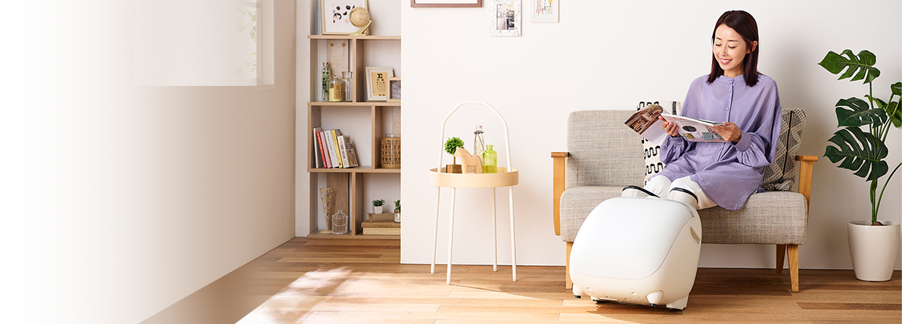
This is the ultimate skill of power and skill
Kneading, kneading, stretching, squeezing
Released on August 1, 2021
Medical device certification number: 303ABBZX00021000
This product is for consumer electronics mass retailers.
We are exhibiting at our Tokyo showroom . Also on sale at the Fuji Medical Instrument Online Shop .

Feature 1NEWUnique function
The roller on the sole of the foot moves back and forth while rotating, stretching and loosening the entire sole.
The roller can be selected from three types of movements to suit your taste.
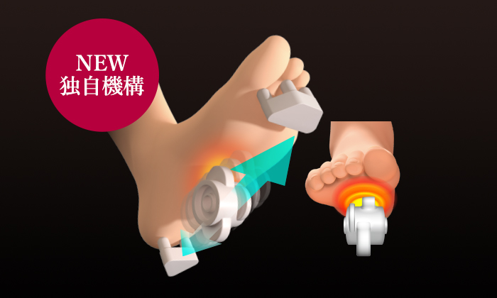
エアーバッグで足を掴み、足裏をローラーが回転しながら前後に移動してマッサージします。
指先、かかと付近は指圧突起でグイグイと刺激します。
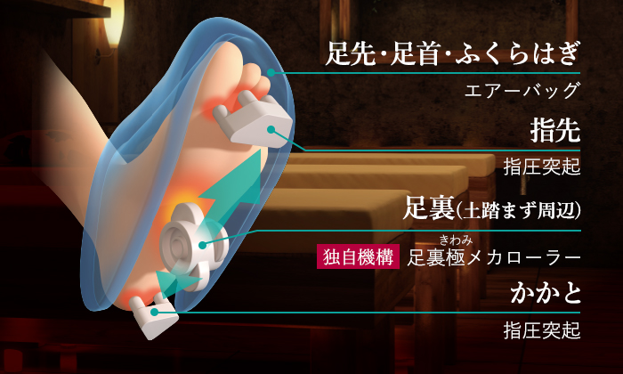
お好みに合わせて「ムーヴ」「ポイント」「自動」の3種類の中から足裏の動作を選択することが出来ます。
※コース動作中も選択可能
※コース開始時は足裏ローラーは「自動」に初期設定されています。
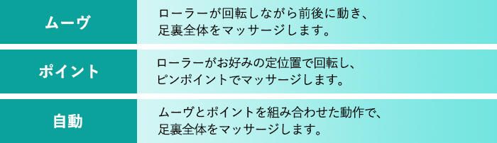
特長2
ふくらはぎ、足先、足首を6個のエアーバッグで包み込むようにマッサージします。
足先と足首をしっかり掴み、ふくらはぎをギューっと絞りあげます。
エアーマッサージの強弱は5段階の調節が可能です。
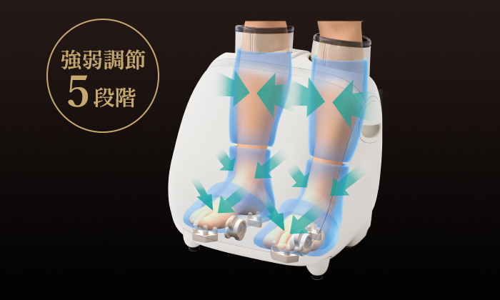
特長3
冷えやすい足先をじんわりやさしく温め、マッサージをサポートします。
※コース動作中も切り替えが可能です。
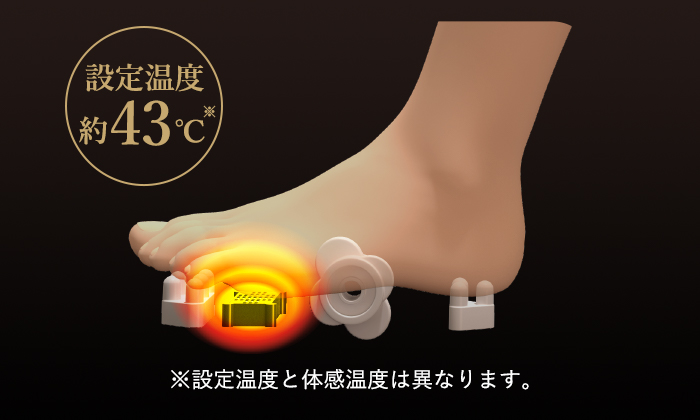
特長4
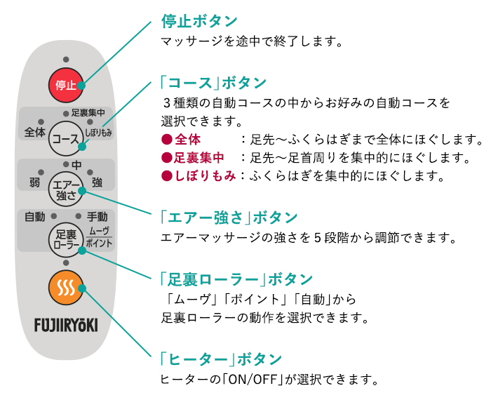
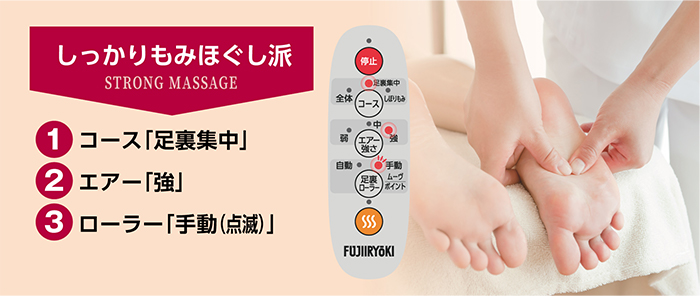
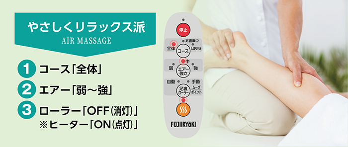
特長5
足を入れる部分はファスナーで開閉できるようになっており、簡単に足の出し入れができます。
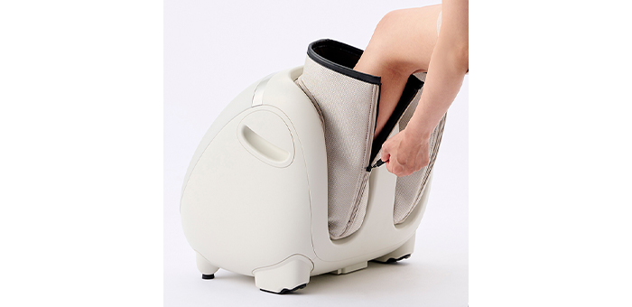
特長6
椅子の高さやお好みの角度に合わせて本体の角度を調節することができます。
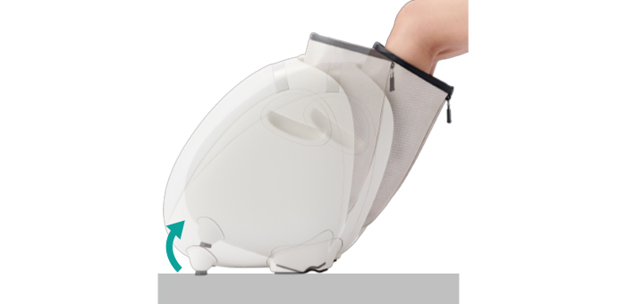
あんま、マッサージの代用。一般家庭で使用すること。
| 販売名（品番） | フットマッサージャー KC-220 |
|---|---|
| メーカー希望小売価格 | オープン価格 |
| 医療機器認証番号 | 303ABBZX00021000（家庭用電気マッサージ器・管理医療機器） |
| 定格電圧 (50/60Hz) | AC100V |
| 定格時間 | 20分 |
| 定格消費電力 (50/60Hz) | 51W |
| 定格電動機消費電力 | 40W |
| 定格電熱器消費電力 | 11W |
| エアーマッサージ空気圧 | 70kPa以下 |
| エアーマッサージ強さ調節範囲 | 5段階調節 |
| 足裏自動回転数 | 遅：約6～17回/分 速：約15～35回/分 |
| 施療部移動速度 | 0.6～0.97cm/秒 |
| オートタイマー | 約10分 |
| 寸法 | 本体寸法：幅 約42×奥行き 約44×高さ 約46cm 梱包箱：幅 約45×奥行き 約43×高さ 約55cm |
| 質量 | 本体：約7kg 梱包箱：約9kg |
| 対応サイズ（めやす） | 足のサイズ ：約30cm以下 ふくらはぎ周長：約41cm以下 |
| ヒーター設定温度 | 約43℃ （室温等により体感温度が異なる場合があります。） |
| 張地 | 本体：ABS樹脂（一部PVCレザー貼り付け） 布：ポリエステル |
| JANコード | 4951704134705 |
| 発売日 | 2021年8月1日 |
| 電気代の目安 | ヒーターとマッサージ ： 約21円/月 マッサージのみ ： 約17円/月 ※1日約30分（10分×3回）毎日使用した場合。電気料金目安単価 27円/kWh（税込）で算出。（2021年4月現在、当社調べ） |
※写真・イラストは全てイメージです。